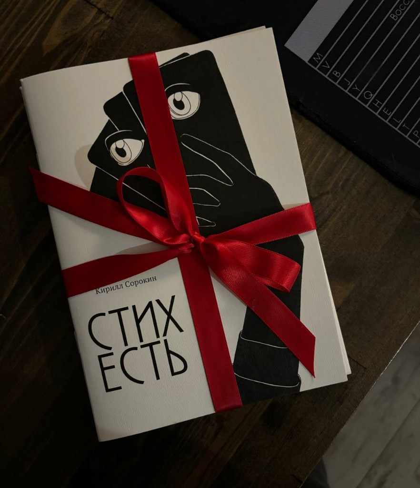
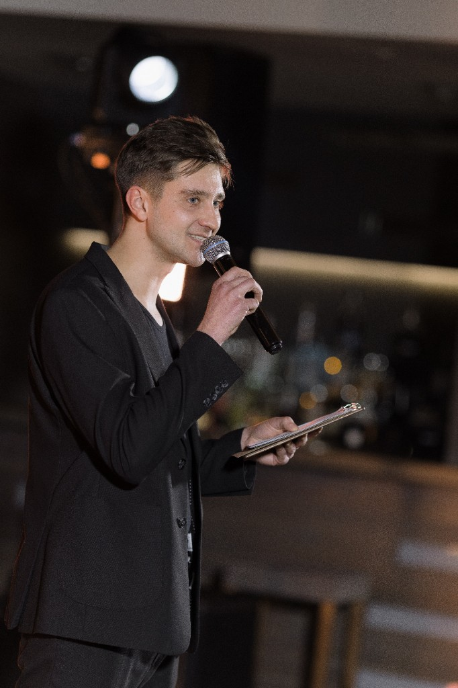
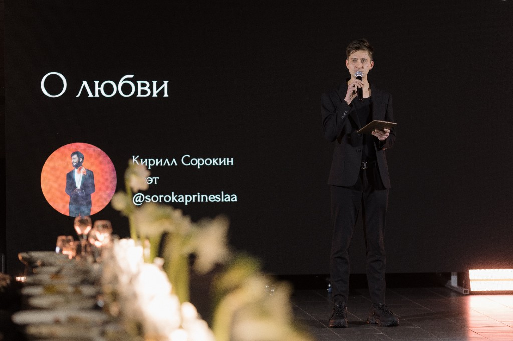
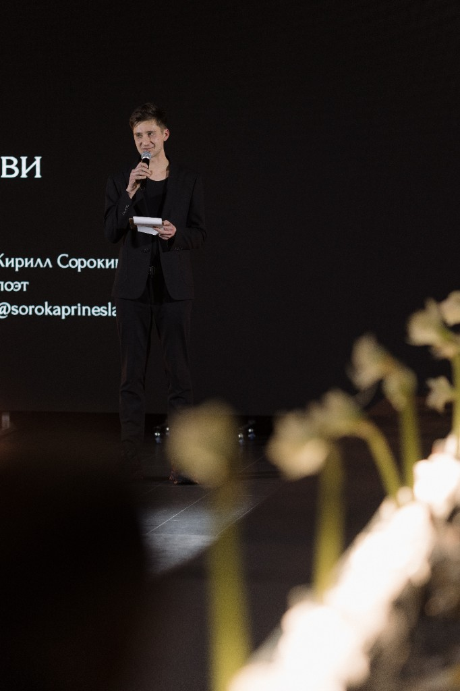

Церемониальные речи
Речь ведущего или тех, кто проводит церемонию: структура, смысл и эмоция, сшитые под вашу пару и сценарий дня.
Сорока принесла
Пишу церемониальные тексты под вашу историю — тепло, точно и без шаблонных фраз.
От торжественной церемонии до короткого поздравления родственника — текст, который удобно произносить вслух.
Речь ведущего или тех, кто проводит церемонию: структура, смысл и эмоция, сшитые под вашу пару и сценарий дня.
Аккуратно правлю готовые тексты родителей, свидетелей и гостей: убираю клише, усиливаю личные детали, сохраняю ваш голос.
Авторские стихи под историю знакомства, шутки пары и атмосферу праздника — для церемонии, банкета или семейного сюрприза.
Стихотворение «Дом у озера» — из реальной работы. Рядом — как могут звучать речь на церемонии и слова родителя: с живой деталью, без готовых фраз из интернета. Так проще понять, что вы получите.
Видишь, дом у озера, где мы будем жить?
Представляешь. Я тоже в него поверила.
Я впервые его увидела в парке, тут,
на самой верхушке колеса обозрения.
А ещё чуть больше узнала о нём,
когда ты мне впервые сказал «родная»:
мы там будем с тобой просыпаться днём
и бежать, черешню от птиц спасая.
А однажды, представь, мой зайка, моя любовь,
мы с тобой, покушав черники вволю,
прям на нашем озере на теплоход
под твой смех запрыгнем — лишь мы с тобою.
А сейчас мы сидим, на глазах следы
слёз от радости, шума, заботы, встречи.
Дом у озера встретит наши мечты —
там мы будем такими же, как при встрече.
Вы встретились не на красивой декорации — а в обычный вторник, когда у кого-то разрядился телефон, а у кого-то была лишняя зарядка. С той мелочи началась ваша привычка спасать друг друга без лишних слов.
Сегодня вы не «становитесь семьёй с нуля». Вы признаёте вслух то, что уже давно держит ваш дом: доверие, смех на кухне и тихое «я рядом», сказанное вовремя.
Я не буду учить вас любить — вы и так умеете. Я хочу, чтобы вы помнили: дом строится не из громких тостов, а из вечеров, когда один устал, а второй не спрашивает «почему», а просто ставит чай.
Берегите эту тишину между вами. В ней больше силы, чем в любой красивой фразе.
Кирилл Сорокин — поэт, автор книги «Стих Есть». Те же внимание к детали и живому голосу переносятся в свадебные речи и стихи о паре.

Выступал на свадебной конференции как поэт — о словах, которые остаются с парой на всю жизнь.



Заявка придёт мне в Telegram. Можно начать с короткой формы или сразу заполнить подробный бриф — так текст получится точнее.